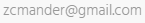

Teijo Mursu
Full stack -kehittäjäOlen itseoppinut kehittäjä Oulusta, jolta löytyy palava himo kehittämiseen.
Lähtöisin Kemijärveltä, jossa kävin peruskoulun loppuun ja jo tällöin teknologia ja ohjelmointi oli suuria mielenkiinnon kohteitani. Muutamien kesätyöpaikkojen kautta urani urkeni ja sähköalan työt sai jäädä. Tällähetkellä tulevaisuuden suuntana näen erilaisen automaation ja pilvipalveluiden arkipäiväistymisen, joten Azure, AWS, sekä GCP ovat alustoja, joiden sisältöä ja kehittymistä tulee seurattua.
Harrastuksiin lukeutuu salilla käyntiä ja vaellusta, mutta tunnustan, että välillä myös rojahdan sohvalle norkoilemaan ja seuraamaan enemmän tai vähemmän viihdyttävää TV-sarjaa tai elokuvaa.
Kokemus
Backend
Yli 5v Backend-toteutuksia Python-alustalla, jolloin tutuksi on tullut useat protokollat ja paradigmat. Mm. API-rajapinnat, tietojärjestelmäintegraatiot, Modbus, WCF, sekä OAuth.
Pitkän ajan kokemuksena on tarttunut pitkäjänteisiä käytäntöjä niin koodin luettavuuden, testauksen, arkkitehtuurin, kuin suunnittelunkin osalta.
Tietokannat
Merkittävä PostgreSQL-osaaja ja SQL arkkitehti. ORM ja migraatio-keskeinen kehitys on pitänyt tietokannat hallinnassa ja joissain tilanteissa tullut käytettyä myös MongoDB:tä, sekä SQL Server:iä tietovarastona.
Frontend
Lähtökohtaisesti rautainen Angular -osaaja. Olen tehnyt kauan AngularJS:llä ohjelmistoja ja sittenmmin siirrynyt tuoreempaan Angular -versioon. Välillä myös muita tuulia tarkastellut, kuten Backbone.js, Ember, sekä React.
Tätä myötä myös muu Javascript-kehitysympäristö on tullut tutuiksi jo webpack ja bower:sta lähtien ja nykyisin suosin TypeScriptiä.
GIS, Viestijonot, Redis
Paljon on tullut tutuksi myös muuta teknologiaa, joista ehkä eniten käytettynä on ollut suurta suosiotakin saanut Redis-tietovarasto. Viestijonoja olen käytetty paljon palveluiden parantamiseen, oli viestijono sitten toteutettu omana palvelunaan, kuten RabbitMQ, tai Redis:n päälle (esim. rq), on perusperiaate tietenkin pohjimmiltaan hyvin samankaltaista.
Toisaalta en pelkää tutustua uusiin asioihin, joten karttapalvelut, sekä siihen liittyvä teknologia (mm. WMS, WFS, sekä Geoserver) on tullut tarpeen myötä tutkittua ja myöskin toteutettua niihin liittyviä projekteja.
Avainteknologiat
Alla lueteltu muutamia teknologioita, joita tyypillisessä Web-sovelluksen kehitysprojektissa on tullut käytettyä.
| Microsoft | Open Source / Free Software | |
|---|---|---|
| Tietokannat |
|
|
| Sovelluskehykset ja kirjastot |
|
|
| Web-kehitys |
|
|
| Testaus |
|
|
| Dokumentaatio |
|
|
| Muuta |
|
|
Työkokemus
Senior Full-stack Developer
Loihde Oyj
Oulu
SW, Engineer
Bittium Wireless Oy
Oulu
Ohjelmistokehittäjä
Autori Oy
Oulu
Ohjelmistokehittäjä
Sebitti Oy
Oulu
Ohjelmistoarkkitehti
Masinotek Oy
Oulu
Ohjelmistokehittäjä
Elfconsulting Oy
Oulu
Sertifikaatit
AZ-900
Microsoft Azure Fundamentals
Koulutus
Automaatioasentaja
Oulun seudun ammattiopisto
Oulu
Varusmiespalvelus
Kajaani
B-ajokortti
Oulu
SUOSITTELIJAT


Yhteystiedot
Kurkelankuja 4 C 16
90120 OULU
+358445695782
